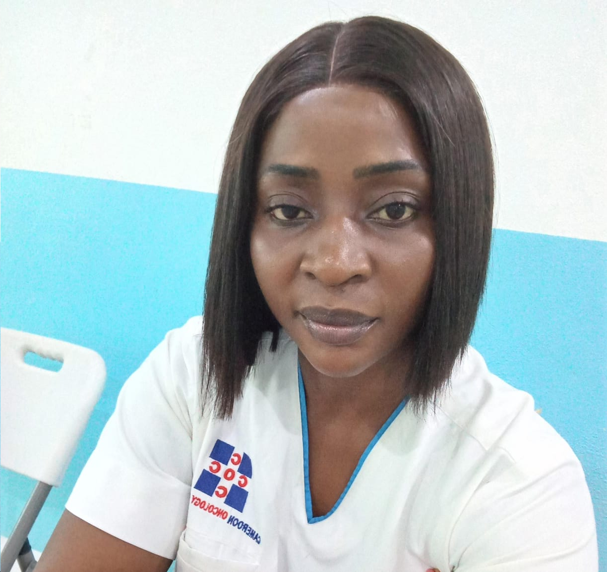

Mme Sintia Futela, MSc
Data Coordinator & Lead, Outreach Programs
Mme Sintia Futela supports coordination of community outreach, cancer-awareness activities and program data, helping connect prevention and screening activities with COC's clinical mission.
Outreach activities are carried out through teamwork involving CCF, COC clinicians, nurses, laboratory personnel, data staff and community partners.